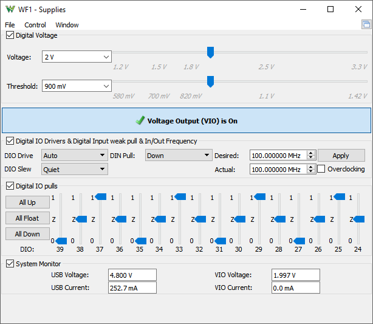

This instrument allows you to adjust and enable the device power supply. See Power Supply for more information.

The Digital Voltage adjusts the VIO voltage, drives Digital IO pins, and also sets the input threshold for DIO and DIN pins. The DIO pins have an input hysteresis of about 3-5% (0.1mV for 3.3V, 0.05mV for 1.2V) of the VIO voltage and the DIN lines 4-6% (0.13mV for 3.3V, 0.07mV for 1.2V).
The Voltage Output on VIO pins can be enabled and disabled.
The Digital IO pins drive strength can be adjusted between 2 and 16 mA and the slew rate in three steps.
The Digital Input weak pull can be used to adjust the input sensitivity of the DIN pins. The pull-down shifts the threshold up by about 4% (1.42V-0.13V for 3.3V) of VIO and pull-up down by 6% (1.42V+0.2V for 3.3V).
The default 100MHz system frequency can be adjusted between 50-100MHz, like: 67.108861, 67.108868, 67.108871 MHz
For each Digital IO pin, a 10 kΩ pull can be configured to VCC or GND, or left floating.
The System Monitor displays the USB and VIO voltages and currents.
See Menu in Common Interfaces.
For more information see Digital Discovery.